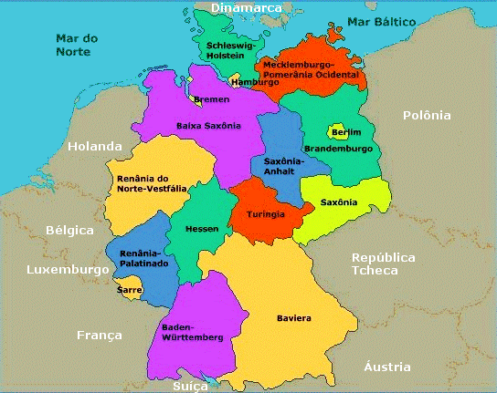
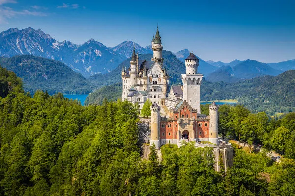
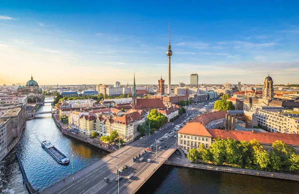

Informações Gerais
Alemanha é um país europeu conhecido por sua grande força econômica, sendo o país mais rico do continente e com grande protagonismo político na União Europeia.
A Alemanha é o país mais populoso (sem contar a Rússia) e rico da Europa, tendo grande relevância nas decisões regionais e mundiais nos mais variados níveis: política, economia, aspectos sociais, entre outros. Veja, a seguir, alguns dados gerais retirados das plataformas digitais do Banco Mundial, do Fundo Monetário Internacional e do Instituto Brasileiro de Geografia e Estatística (IBGE). Este último possui um canal em que aborda vários dados de todos os países do globo.
Breve história da Alemanha
Clique aqui para ler a história completa da Alemanha
Dados gerais sobre a Alemanha
- Nome oficial: República Federal da Alemanha
- Capital: Berlim
- População: aproximadamente 84 milhões de habitantes (2021)
- Área: 357.386 km²
- Moeda: Euro
- Clima: Temperado sazonal, com invernos moderados e verões que costumam superar os 30°C.
- Localização: Faz fronteira com 9 países (França, Suíça, Áustria, República Tcheca, Polônia, Dinamarca, Países Baixos, Bélgica e Luxemburgo).
Governo
Governo: possui um sistema parlamentarista desenvolvido pela Constituição de 1949. Esse sistema possui duas lideranças políticas: o chanceler, que é eleito pelo Parlamento (uma espécie de Câmara dos Deputados aqui no Brasil), e o presidente da república, eleito por um colégio eleitoral, a Bundesversammlung, para um mandato de cinco anos. Embora seja um chefe de Estado, o presidente possui atribuições de nomeações de cargos públicos e sanções de leis, sendo o chanceler uma figura mais executiva e com maiores responsabilidades em assuntos externos.
Geografia da Alemanha
Localizada na parte oeste da Europa, a Alemanha possui clima temperado oceânico, com influência direta do Mar do Norte e do mar Báltico. Essa influência, conhecida por maritimidade, faz com que as chuvas sejam abundantes no país durante o ano todo, principalmente entre abril e agosto, fazendo com que os verões sejam quentes e chuvosos mais ao norte. Já no centro e no sul do país, a maritimidade diminui, o que torna os verões mais amenos e invernos frios, com temperaturas que podem chegar a -5 ºC.
Em termos de relevo, o país conta com áreas planas ao norte, e, indo em direção ao sul, as altitudes começam a elevar-se. É no sul, nos Alpes Bávaros, que encontramos o pico mais alto da Alemanha, com 3000 m de altitude, na fronteira com a Áustria.
Na hidrografia, três rios merecem destaque: o Reno, o Danúbio e o Elba, que são navegáveis em grande parte de seus canais, tendo o país uma das maiores hidrovias do globo.
Mapa da Alemanha
A Alemanha está localizada na parte oeste da Europa e faz fronteira com os seguintes países:
- Dinamarca, ao norte, além do Mar do Norte e do mar Báltico;
- Bélgica, França, Holanda e Luxemburgo, a oeste;
- Áustria e Suíça, ao sul;
- Polônia e República Tcheca, a leste.

Cultura
A cultura alemã é apreciada em grande parte do mundo. Vários hábitos alemães foram incorporados por outras localidades do globo, principalmente os gastronômicos, como a cerveja e o bolo floresta negra, um marco culinário significativo da Alemanha. A Oktoberfest, tradicional festa cervejeira, reúne amantes da bebida de todas as partes do mundo, tendo versões dela em vários países, como no Brasil, na cidade de Blumenau, em Santa Catarina.
Nessa festa, os trajes típicos alemães são itens essenciais, como vestidos com grande volume, chapéus, bermudas com suspensores e o amor pela cerveja, é claro. Esse amor é hereditário, sendo passado de geração em geração, algo admirável da cultura alemã.
Outro hábito cultural louvável dos alemães é a sinceridade. Para alguns estrangeiros, esse hábito pode soar como grosseria, ou rudez, mas é um traço característico desses habitantes, e, aos poucos, quem é de fora acostuma-se com ele. Os alemães adoram carne suína, sendo essa incorporada em vários pratos, como esbein, schlachtplatte e bratkartoffeln.
Economia
Apesar de possuir a maior economia da Europa em valores absolutos, a Alemanha ocupa atualmente o posto de terceira maior economia do mundo — tendo ultrapassado o Japão —, ficando atrás apenas dos Estados Unidos e da China. Além disso, o país não é o mais rico do continente em termos de renda por habitante, sendo superado por nações como Luxemburgo e Irlanda no cálculo do PIB per capita. No setor energético, a histórica dependência de combustíveis fósseis importados e do carvão nacional passa por uma profunda transformação acelerada após 2022, com o governo alemão priorizando a transição para fontes renováveis e reduzindo progressivamente o uso de poluentes para cumprir suas metas climáticas.
As principais áreas industriais no país estão localizadas no Vale do Ruhr. Esse vale é a região mais industrializada da Europa e integra um fluxo de transportes que é ligado ao porto de Roterdã, na Holanda, o principal do continente. Os destaques industriais ficam por conta das indústrias:
- automobilística
- química
- siderúrgica
- eletroeletrônica
A parte oeste da Alemanha é a mais desenvolvida em termos econômicos. Isso é explicado por questões históricas, devido à divisão do país no período da Guerra Fria. Tal divisão fez com que a parte ocidental se desenvolvesse mais do que a parte oriental, pois havia fortes investimentos de indústrias capitalistas na região.
As cidades Munique e Stuttgart são conhecidas por abrigarem as principais indústrias alemãs de alta tecnologia, como a DaimlerChrysler, que produz automóveis de luxo, sendo uma das maiores transnacionais do mundo.
Turismo na Alemanha
Viajar pela Alemanha é sempre um prato cheio em vários quesitos, principalmente na gastronomia (com cervejas e linguiças) e em paisagens históricas. É necessário saber as condições climáticas do país para poder aproveitar com êxito as belezas e sabores ofertados ali. Costuma-se dizer que a melhor época para visitá-lo é entre abril e outubro, durante a primavera e o verão, mas os outros meses do ano também podem ser escolhidos pelos turistas.

Brasileiros necessitam de visto para entrar no país e permanecem com esse visto por até 90 dias, desde que comprovada a reserva e a quantidade de dinheiro suficiente para o período estipulado, além da apresentação do comprovante de retorno ao país de origem, ou seja, a passagem de volta.
As cidades mais visitadas são: Berlim, Munique, Hamburgo, Nuremberg e Frankfurt. Não obstante, o país é cheio de lugares incríveis a serem conhecidos, como Rothenburg e Heidelberg, cidades famosas por seus aspectos medievais e elegantes.

Curiosidades
- Grandes nomes da música, filosofia e história são alemães: Beethoven, Bach, Emmanuel Kant, Friedrich Nietzsche, Arthur Schopenhauer, Karl Marx, entre outros.
- A Alemanha foi o primeiro país do mundo a adotar o horário de verão.
- É o país europeu que mais consome plástico, porém também é líder mundial na reciclagem do lixo.
- Em algumas cidades alemãs, os cães pagam impostos, que variam de acordo com a raça e o comportamento deles.
- A Alemanha possui o maior zoológico do mundo em termos de quantidade de animais, o Zoológico de Berlim, com quase 14 mil animais.
- O evento literário mais importante do mundo ocorre em Frankfurt.
- 16 anos é a idade mínima para o consumo de cerveja
- A Alemanha é o terceiro maior consumidor de cerveja do planeta. A República Tcheca ocupa a primeira posição e a Áustria a segunda.
Quiz Interativo • Teste seus conhecimentos!
Responda às 5 perguntas sobre a Alemanha. Acompanhe seu progresso na barra colorida com as cores da bandeira alemã (preto, vermelho e amarelo/ouro).